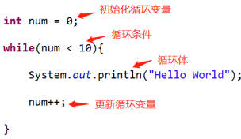
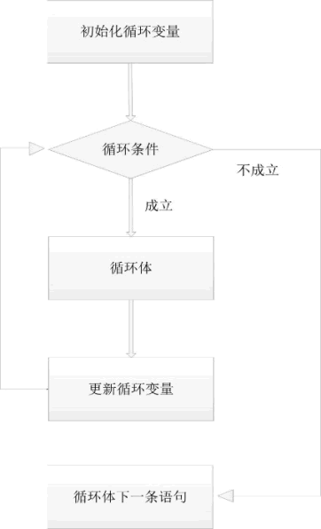
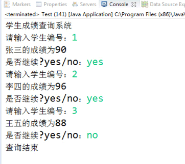

首页 > 编程笔记
Java while循环用法详解
循环是程序开发非常重要，也是使用频率很高的一个技能点。举一个例子，要求将“Hello World”打印 10 遍。如果不使用循环，需要写 10 行相同的代码“System.out.println("Hello World");”，如下代码所示。
在 Java 中，while 是一种具体的循环方式，它的基本语法如下：
所以我们在写循环时，需要额外添加控制循环条件的代码，这部分代码和循环本身组成了循环四要素，这是很重要的知识点，它描述了循环的本质，循环四要素如下：
一段完整的循环代码，四要素缺一不可。
接下来我们使用 while 循环来实现重复打印10次“Hello World”的需求，代码如下所示。
执行顺序是：
执行顺序如下图所示。
【实例】用 while 循环完成一个学生成绩查询系统，输入学生编号，查询出该学生的成绩，输入“yes”可重复查询，输入“no”结束循环。
引入之后来创建该类的实例化对象“Scanner scanner = new Scanner(System.in);”，其中“System.in”表示获取的是输入数据。接收不同的数据需要调用不同的方法，nextInt()方法用来获取 int 类型的数据，next() 方法用来获取 String 类型的数据。判断 String 类型的数据是否相等时，不能使用 ==，需要使用 equals() 方法进行判断。
程序的运行结果如下如所示：
public class Test {
public static void main(String[] args) {
System.out.println("Hello World"); //该语句写10次
}
}
很显然这种写法并不是最优的方式，重复性的代码非常多。如果使用循环，我们就可以避免这个缺陷，用效率更高的方式来完成同样的需求。在 Java 中，while 是一种具体的循环方式，它的基本语法如下：
while(循环条件){
//循环体
}
当循环条件成立时，会重复执行循环体中的代码，直到条件不成立。那么很显然，我们应该在循环体中动态控制循环条件是否成立，否则就形成了死循环。循环条件始终成立导致循环体一直执行，不会停止。所以我们在写循环时，需要额外添加控制循环条件的代码，这部分代码和循环本身组成了循环四要素，这是很重要的知识点，它描述了循环的本质，循环四要素如下：
- 初始化循环变量；
- 循环条件；
- 循环体；
- 更新循环变量。
一段完整的循环代码，四要素缺一不可。
接下来我们使用 while 循环来实现重复打印10次“Hello World”的需求，代码如下所示。
public class Test {
public static void main(String[] args) {
int num = 0;
while(num < 10){
System.out.println("Hello World");
num++;
}
}
}
对上述代码进行分析，循环四要素如下图所示。

执行顺序是：
- 第一步，初始化循环变量。
- 第二步，判断循环条件，若成立，则执行循环体；若不成立，则直接跳过循环，去执行后面的代码。若执行了循环体，则进入第三步。
- 第三步，更新循环变量，然后再回到第二步，重新判断循环条件是否成立。
执行顺序如下图所示。

【实例】用 while 循环完成一个学生成绩查询系统，输入学生编号，查询出该学生的成绩，输入“yes”可重复查询，输入“no”结束循环。
import java.util.Scanner;
public class Test {
public static void main(String[] args) {
System.out.println("学生成绩查询系统");
Scanner scanner = new Scanner(System.in);
int num;
String str = "yes";
while(str.equals("yes")){
System.out.print("请输入学生编号：");
num = scanner.nextInt();
switch(num){
case 1:
System.out.println("张三的成绩为90");
break;
case 2:
System.out.println("李四的成绩为96");
break;
case 3:
System.out.println("王五的成绩为88");
break;
}
System.out.print("是否继续?yes/no：");
str = scanner.next();
}
System.out.println("查询结束");
}
}
Scanner 是一个工具类，用来接收用户在控制台输入的数据，使用 Scanner 首先需要将 Scanner 类引入当前类中，语句：“import java.util.Scanner;”，其中 java.util 是 Scanner 类的包名，在一个类中要使用其他包中的类，必须要引入（即import）。引入之后来创建该类的实例化对象“Scanner scanner = new Scanner(System.in);”，其中“System.in”表示获取的是输入数据。接收不同的数据需要调用不同的方法，nextInt()方法用来获取 int 类型的数据，next() 方法用来获取 String 类型的数据。判断 String 类型的数据是否相等时，不能使用 ==，需要使用 equals() 方法进行判断。
程序的运行结果如下如所示：

关注公众号「站长严长生」，在手机上阅读所有教程，随时随地都能学习。内含一款搜索神器，免费下载全网书籍和视频。

微信扫码关注公众号